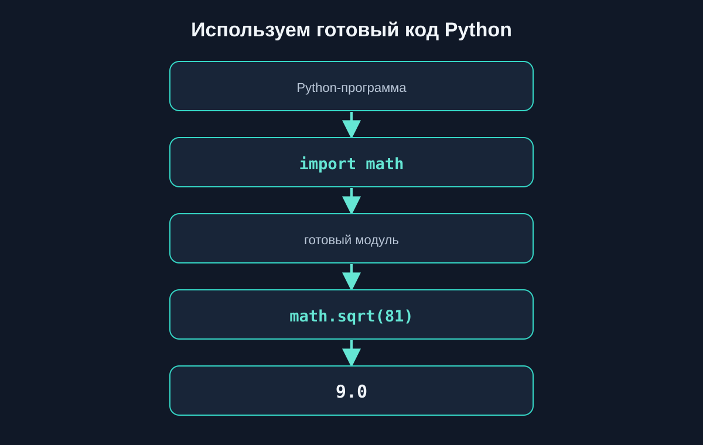
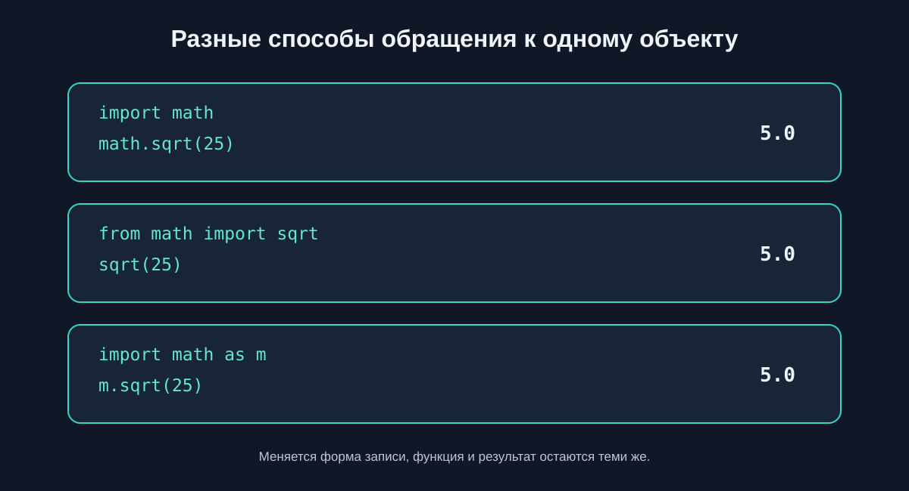
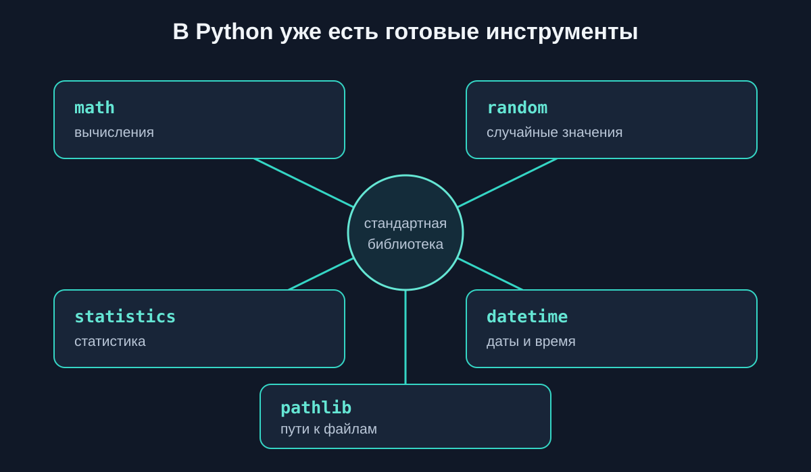
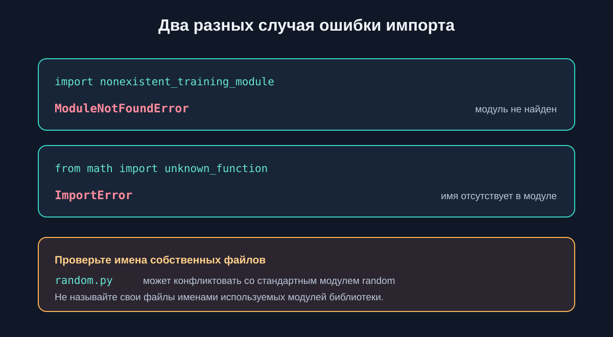

4.8 Модули и импорты
модули Python, импорт модулей Python, import Python, from import Python, стандартная библиотека Python, math Python, random Python, datetime Python
Что такое модуль
Модуль — это готовый набор кода Python, который можно подключить командой import. В этой главе мы используем модули стандартной библиотеки: они уже поставляются вместе с Python и не требуют отдельной установки.
Модули помогают не писать заново типовые инструменты. Например, math умеет вычислять квадратный корень, а statistics — среднее значение набора чисел.

Первый импорт
Команда import math подключает модуль math. К его объектам обращаются через точку: сначала указывают имя модуля, затем имя функции или константы.
Здесь math.sqrt() вычисляет квадратный корень, math.ceil() округляет вверх, а math.floor() — вниз.
Импорт конкретных объектов
Если нужны только отдельные объекты, их можно перечислить после from ... import. После этого к ним обращаются по имени, без префикса модуля.
Можно импортировать несколько имён через запятую, как в примере выше. from math import sqrt, ceil подключает обе функции.
Псевдонимы через as
Слово as задаёт другое имя для обращения к модулю или импортированному объекту. Выбирайте короткий, но понятный псевдоним.
Имя m в этом примере — псевдоним math, а m.sqrt(49) вызывает ту же функцию, что и math.sqrt(49).

Какой способ импорта выбрать
Три формы дают доступ к одному объекту, но выглядят по-разному:
| Запись | Обращение к функции | Когда удобно |
|---|---|---|
import math |
math.sqrt(25) |
Видно, откуда взято имя; удобно использовать несколько объектов модуля |
from math import sqrt |
sqrt(25) |
Нужна одна или несколько конкретных функций |
import math as m |
m.sqrt(25) |
Псевдоним делает длинное имя удобнее |
Для начинающего хороший выбор по умолчанию — import math: происхождение каждого имени остаётся видимым. from ... import ... подходит, когда список нужных объектов небольшой и понятный. Не используйте from math import *: в коде не видно, откуда пришли имена, и они могут случайно совпасть с другими именами.
Стандартная библиотека Python
Стандартная библиотека — набор модулей, который поставляется с Python. В этой главе мы познакомимся с несколькими практичными инструментами.

Математические вычисления
В модуле math есть математические функции и константы. Например, math.pi хранит приближённое значение числа π. Площадь круга вычисляется по формуле πr².
Случайные значения
Модуль random позволяет выбрать случайный элемент или получить случайное число. При каждом запуске результат может меняться.
random.randint(1, 6) возвращает целое число от 1 до 6. Обе границы включены.
Статистические вычисления
Модуль statistics помогает находить основные показатели набора чисел. mean() вычисляет среднее арифметическое, а median() — медиану.
Даты и время
Из модуля datetime можно импортировать нужный класс. Например, date представляет календарную дату с годом, месяцем и днём.
Работа с путями
pathlib предоставляет объект Path для представления путей. С его помощью удобно соединять части пути и получать имя или расширение. Для этого примера файл на диске не нужен.
Ошибки при импорте
Если Python не находит запрошенный модуль, возникает ModuleNotFoundError. Если модуль существует, но в нём нет указанного имени, возникает ImportError.
Имена файлов могут конфликтовать с именами стандартной библиотеки. Например, собственный файл random.py способен помешать импорту стандартного модуля random. Не называйте свои файлы именами используемых стандартных модулей.

Что важно запомнить
- Готовые модули Python дают полезные инструменты без необходимости писать их заново.
import moduleподключает модуль, а точка отделяет его имя от функции или константы.from module import nameподключает перечисленные объекты, аasзадаёт псевдоним.- Используйте явные импорты;
from module import *затрудняет чтение кода. math,random,statistics,datetimeиpathlibвходят в стандартную библиотеку.ModuleNotFoundErrorозначает, что модуль не найден;ImportErrorможет означать, что в модуле нет запрошенного имени.
Практические задания
Задание 1. Геометрия
Условие. Длина окружности равна 2πr. Вычислите её для радиуса 3.5, используя math.pi, и выведите результат с округлением до двух знаков.
Исходные данные: radius = 3.5.
Ожидаемое поведение: программа выводит одну длину окружности; результат приблизительно равен 21.99.
import math
radius = 3.5
circumference = 2 * math.pi * radius
print(round(circumference, 2))Задание 2. Округление стоимости
Условие. Для каждой цены определите минимальную целую сумму, которой хватит на покупку, используя math.ceil.
Исходные данные: prices = [12.3, 7.0, 19.8].
Ожидаемое поведение: вывести 13, 7 и 20 — по одному результату на строку.
import math
prices = [12.3, 7.0, 19.8]
for price in prices:
print(math.ceil(price))Задание 3. Случайный промокод
Условие. Выберите один промокод из списка с помощью random.choice.
Исходные данные: codes = ["START10", "PYTHON15", "WELCOME"].
Ожидаемое поведение: программа выводит один из трёх промокодов; выбор может меняться при каждом запуске.
import random
codes = ["START10", "PYTHON15", "WELCOME"]
code = random.choice(codes)
print("Промокод:", code)Задание 4. Броски кубика
Условие. Сгенерируйте 10 бросков кубика значениями от 1 до 6 включительно и посчитайте количество шестёрок.
Исходные данные: число бросков — 10.
Ожидаемое поведение: вывести список из 10 чисел и количество шестёрок от 0 до 10.
import random
rolls = []
for _ in range(10):
rolls.append(random.randint(1, 6))
sixes = rolls.count(6)
print("Броски:", rolls)
print("Шестёрок:", sixes)Задание 5. Анализ температур
Условие. Найдите среднее значение и медиану измеренных температур с помощью statistics.
Исходные данные: temperatures = [18, 21, 19, 24, 20, 17].
Ожидаемое поведение: вывести среднее 19.833333333333332 и медиану 19.5.
import statistics
temperatures = [18, 21, 19, 24, 20, 17]
print("Среднее:", statistics.mean(temperatures))
print("Медиана:", statistics.median(temperatures))Задание 6. Срок выполнения задачи
Условие. Рассчитайте дату завершения задачи через 14 дней после даты начала, используя datetime.date и datetime.timedelta.
Исходные данные: задача началась 2026-03-10.
Ожидаемое поведение: вывести дату завершения 2026-03-24.
from datetime import date, timedelta
start_date = date(2026, 3, 10)
deadline = start_date + timedelta(days=14)
print(deadline)Задание 7. Анализ имён файлов
Условие. Для каждого заданного пути выведите имя файла и расширение с помощью pathlib.Path. Не открывайте файлы.
Исходные данные: paths = ["reports/january.csv", "images/logo.svg", "notes/readme.txt"].
Ожидаемое поведение: вывести пары january.csv / .csv, logo.svg / .svg, readme.txt / .txt.
from pathlib import Path
paths = ["reports/january.csv", "images/logo.svg", "notes/readme.txt"]
for value in paths:
path = Path(value)
print(path.name, "/", path.suffix)Задание 8. Мини-проект: анализ результатов тестирования
Условие. Подготовьте отчёт об оценках: найдите среднее и медиану, округлите среднее вверх до целого с помощью math.ceil и случайно выберите участника из отдельного списка.
Исходные данные: оценки [68, 92, 81, 75, 84]; участники ["Лена", "Игорь", "Саша"].
Ожидаемое поведение: вывести среднее 80, округлённое вверх среднее 80, медиану 81 и имя одного участника из списка. Имя может меняться.
import math
import random
import statistics
scores = [68, 92, 81, 75, 84]
participants = ["Лена", "Игорь", "Саша"]
average = statistics.mean(scores)
median = statistics.median(scores)
selected_participant = random.choice(participants)
print("Среднее:", average)
print("Среднее вверх:", math.ceil(average))
print("Медиана:", median)
print("Участник для разбора:", selected_participant)Что дальше?
Мы научились использовать готовые модули Python. Теперь научимся создавать собственные файлы с функциями и подключать их в других частях программы.
Следующая тема — «Собственные модули».
Модули и импорты в Python: краткое резюме
Модуль предоставляет готовые возможности Python. Команда import подключает модуль целиком, from ... import ... выбирает конкретные объекты, а as задаёт псевдоним. Стандартная библиотека включает math, random, statistics, datetime и pathlib. Явные импорты помогают понять, откуда взяты используемые имена.